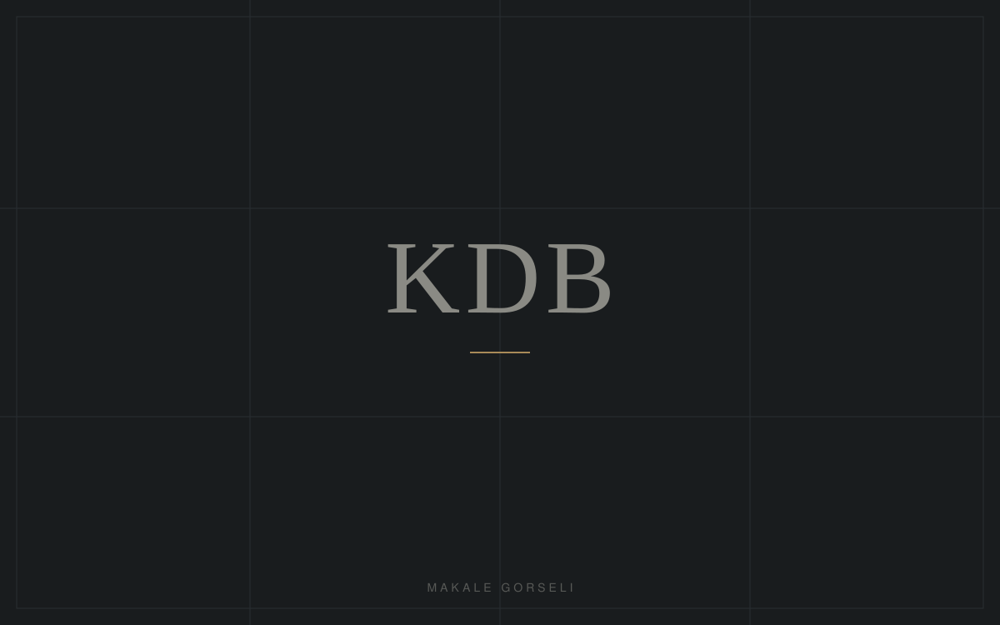
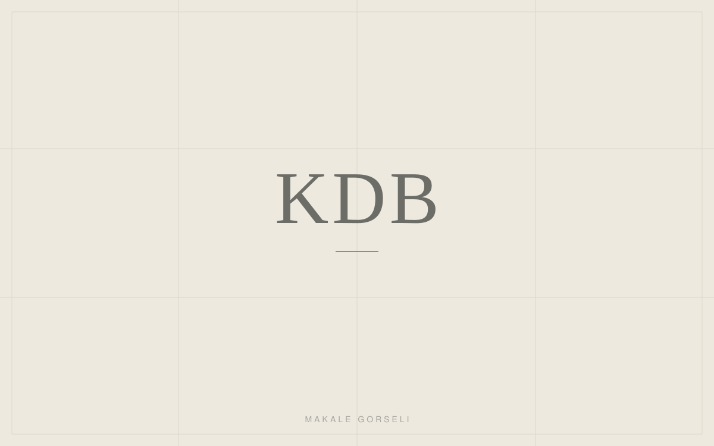

Blog
Hukuki Bilgi Merkezi
Güncel mevzuat, hukuki süreçler ve uygulamaya ilişkin değerlendirmeler.
İçerikler genel bilgilendirme amaçlıdır; hukuki danışmanlık yerine geçmez.
-

Kira Uyuşmazlıklarında Güncel Hukuki Süreçler
Kira bedelinin tespiti, tahliye davaları ve zorunlu arabuluculuk şartı: kiraya veren ve kiracılar için güncel sürecin ana hatları.
Devamını Oku -

İş Sözleşmesinin Feshi ve Çalışanın Hakları
Haklı ve geçerli fesih ayrımı, ihbar ve kıdem tazminatı ile işe iade davasının temel koşulları.
Devamını Oku -

Gayrimenkul Satışlarında Hukuki Riskler
Tapu devri öncesi yapılması gereken kontroller ve satış sözleşmelerinde dikkat edilmesi gereken hususlar.
Devamını Oku -

Soruşturma Aşamasında Şüphelinin Hakları
İfade ve sorgu sürecinde savunma hakkının kapsamı ve müdafi yardımından yararlanmanın önemi.
Devamını Oku -

Limited Şirketlerde Ortaklıktan Çıkma ve Çıkarılma
Ortaklar arasındaki uyuşmazlıklarda çıkma, çıkarılma ve haklı sebeple fesih yollarının değerlendirilmesi.
Devamını Oku -

Anlaşmalı Boşanma Süreci Nasıl İlerler?
Protokol hazırlığından duruşmaya: anlaşmalı boşanmanın koşulları ve uygulamada sık yapılan hatalar.
Devamını Oku -

Mobbing İddialarında İspat ve Hukuki Başvuru Yolları
İşyerinde psikolojik taciz iddialarının değerlendirilmesi ve başvurulabilecek hukuki yollar.
Devamını Oku